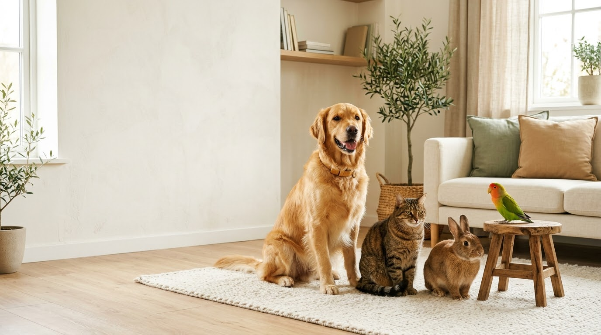
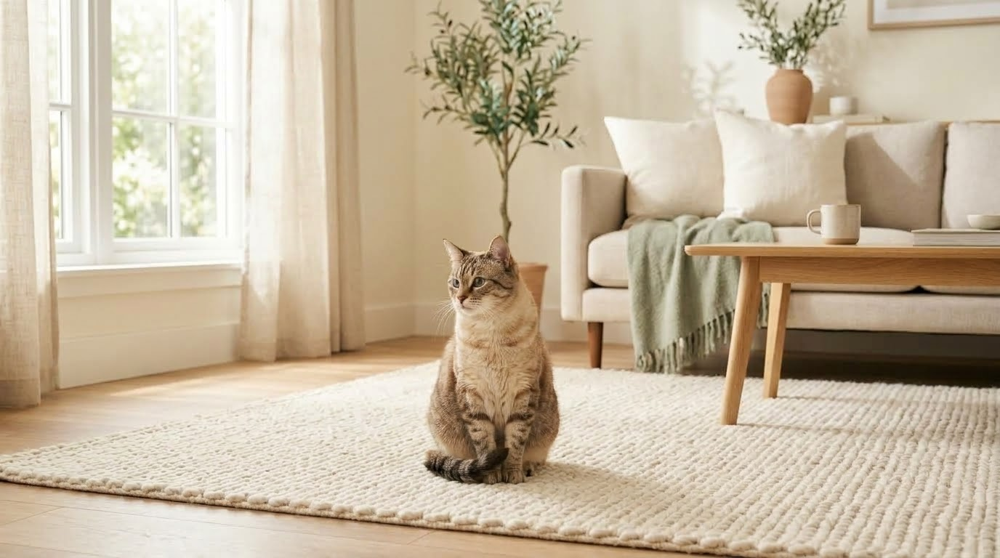
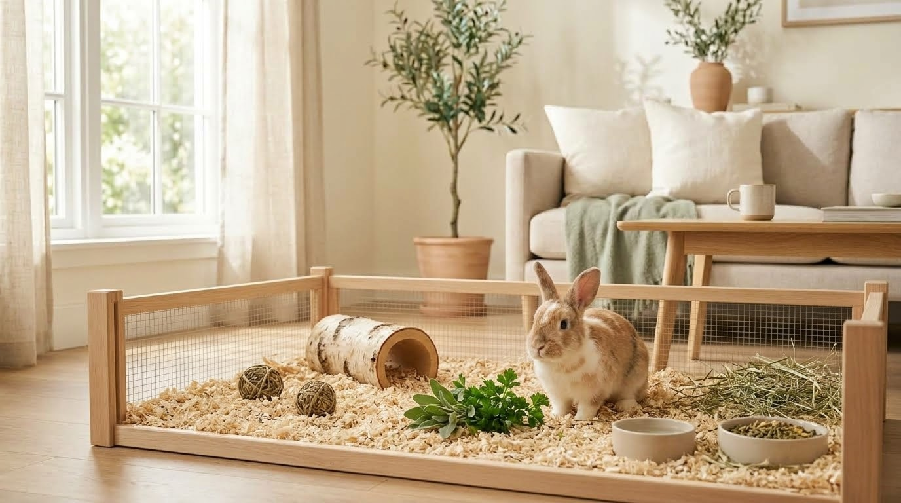
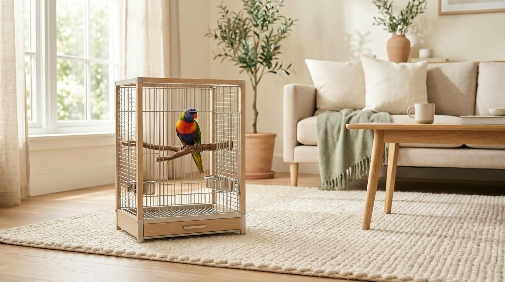
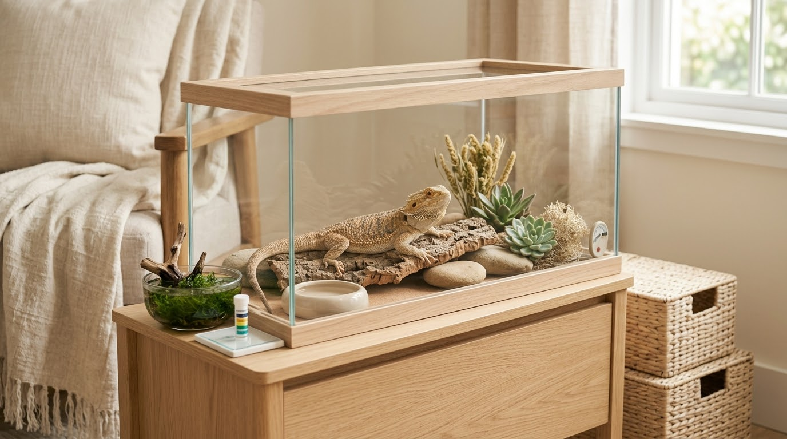

Dogs
Build routines around balanced feeding, exercise, enrichment, grooming, rest and positive interaction.

Build routines around balanced feeding, exercise, enrichment, grooming, rest and positive interaction.

Think about nutrition, litter areas, scratching, play, grooming, quiet spaces and opportunities to explore.

Provide appropriate food, clean living areas, movement, enrichment and safe opportunities to explore.

Consider species-appropriate nutrition, clean housing, enrichment, safe exercise and social interaction.
Small companions still need thoughtful habitats, suitable food, enrichment, cleanliness and gentle handling.

Their environments can be highly specialized, so focus on species-specific habitat, temperature, water quality and feeding requirements.